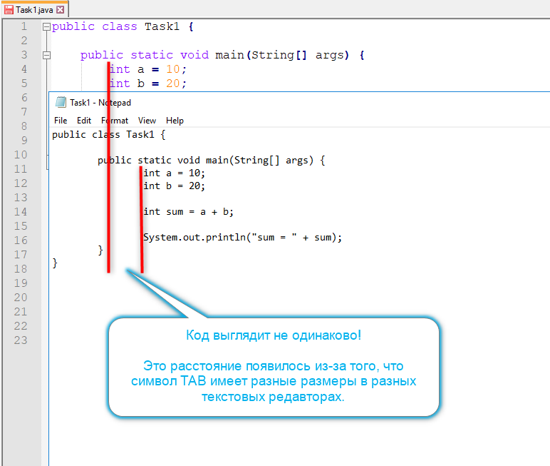

)
будет неудобно читать ваш код.
)
будет неудобно читать ваш код.
Прежде всего, и, исключительно на всякий случай, давайте приведем пример вложенного блока кода, чтобы вспомнить, о чем вообще идет речь. Вложенный блок вы можете видеть вот на этом рисунке:
Вы так же можете привести и другие примеры вложенных блоков — методы относительно класса,
тело цикла относительно заголовка цикла и так далее.
И после этого мы можем начать отвечать на вопрос —
почему вложенные блоки надо сдвигать пробелами, а не TAB-ами?
Дело в том, что над проектом, как правило, работает команда и в этой команде — очень много людей. И у каждого из этих людей есть свой любимый редактор текста, в котором он не только пишет новый код, но и, что куда важнее — читает и правит уже существующий.
И каждый из вашей команды имеет право на то, чтобы ему было комфортно читать ранее написанный исходный текст. А этого можно добиться только тогда, когда
Oтступы вложенных блоков во всех редакторах выглядит одинаково!
Так вот в случае с пробелами этой одинаковости
добиться можно, а в случае с TAB-ами — нет.
А все потому, что:
Пробел имеет одинаковый размер во всех текстовых редакторах, а TAB — разный
Давайте еще раз посмотрим на рисунок с кодом, который мы показывали в начале статьи, только на этот раз покажем один и тот же код в двух разных редакторах — в Notepad++ и Windows Notepad.
Вот что у нас получится, если мы будем использовать для отступов TAB-ы:

Обратите внимание, что в Windows Notepad тело метода смещено вправо гораздо сильнее, чем в Notepad++.
Следовательно, если вы, как автор кода в Notepad++ используете для отступов TAB-ы,
то пользователям Windows Notepad
(или любого другого убогого редактора )
будет неудобно читать ваш код.
А теперь посмотрите, как тот же код выглядит в двух редакторах, после того, как мы заменили TAB-ы на пробелы:
Как вы можете убедиться, исходный код в разных редакторах выглядит одинаково,
и теперь пользователи Windows Notepad не будут испытывать моральных страданий при чтении вашего кода.
Естественно, как только эти люди, стоя перед зеркалом, честно спросят себя —
Что же я такое, если использую Windows Notepad?..
— они тут же начнут испытывать моральные страдания,
но это уже совсем другая история .
Таким образом, мы можем еще раз, и уже окончательно, сформулировать главную идею этой ошибки:
Чтобы ваш код выглядел одинаково во всех редакторах, вы должны сдвигать вложенные блоки кода только пробелами!
И сразу же после этого правила у нас возникает огромная проблема. Естественно! Всем нам было бы очень неудобно:
Нажимать пробел по четыре раза для каждой строки вложенного кода!
Однако, чем хороша профессия программиста, так это тем,
что в ней всё всегда удобно .
В общем, никакой проблемы не существует,
и нажимать по 4 пробела для каждой вложенной строчки нам не придется, потому что:
В любом нормальном текстовом редакторе есть настройка, которая заменяет символ табуляции четырьмя пробелами автоматически!
И наша задача с вами теперь — посмотреть, как это можно настроить в популярных редакторах.
1. Как настроить замену TAB-ов в Notepad++?
2. Как настроить замену TAB-ов в Eclipse IDE?
3. Как настроить замену TAB-ов в Intellij IDEA?
ПЕРЕНЕСИ В ОТДЕЛЬНОЕ УПРАЖНЕНИЕ!
Сразу же приятно сообщить, что в Intellij IDEA пробелы вместо TAB-ов используются по умолчанию, поэтому пользователи IDEA вряд ли доберутся до этого текста. Но если на вашей IDE это не так, или вы хотите лично удостовериться, или вы когда-то поменяли эту настройку, а сейчас не знаете, как вернуть изменения, то это упражнение станет для вас коротким планом действий.
1. В главном меню IDEA выберите пункт File –> Settings:

2. Откроется главное окно настроек Intellij IDEA:
3. Слева вы увидите дерево навигации по основным разделам настроек.
Выберите в этом дереве пункт Editor → Code Style → Java:
Примечание.
Попутно обратите внимание на то, что IDEA определяет настройки форматирования отдельно для каждого языка или типа файлов.
4. Ну и, наконец, в центральной части окна, на первой выбранной вкладке Tabs and Indents
вам нужно убедиться, что флажок Use tab character снят (не активен),
а в поле Tab size установлено значение 4:

4. Как настроить замену TAB-ов в NetBeans?
На текущий момент у меня не установлена Netbeans IDE. И я ей практически никода не пользовался за свою карьеру. Если вам интересно мое мнение, друзья, то Netbeans — плохая IDE. И пользоваться ей не нужно. Просто возьмите Eclipse или IDEA и получите в сотни раз больше удобства. Но если по какой-то причине вы все еще хотите использовать NetBeans, то вам придется самостоятельно искать настройки для форматирования кода в этой IDE.
5. Как настроить замену TAB-ов в Windows Notepad?
Никак! Windows Notepad — это не редактор для исходного кода! Строго говоря, это —
вообще не редактор .
В нем нет не только возможности заменять TAB-ы на пробелы, но и вообще — ничего нет:
В нем вообще — ничего нет! И если вы до сих пор программируете в Windows Notepad, то
замена TAB-ов на пробелы вас никак не спасет .
Все, друзья, я уверен, что больше у вас вопросов с экзистенциальным выбором
пробелы или TAB-ы
— не возникнет.
За то, что вы так долго читали, предлагаю вам немного расслабится и посмотреть эпичнейшую сцену из долины,
посвященную именно этому выбору.
Ведь, признайтесь, вы же когда увидели эту ошибку, подумали —
Да какого ж хрена? Это ж совсем непринципиальный момент!
.
Ага не принципиальный! Посмотрите, там чувак из-за пробелов пустил под откос свою будущую семейную жизнь
.
Только я вас умоляю о двух моментах:
.